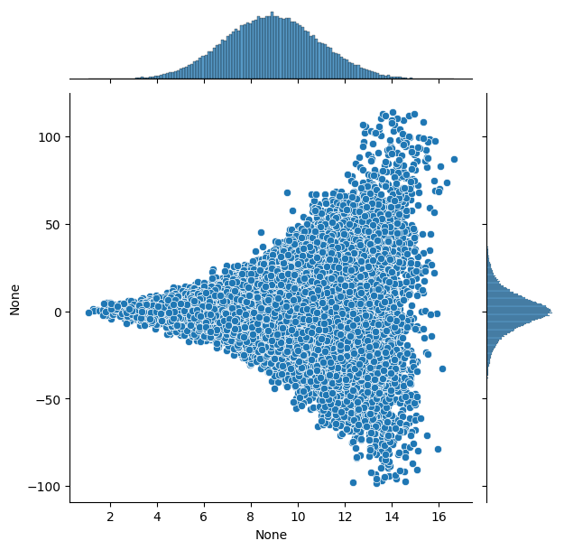
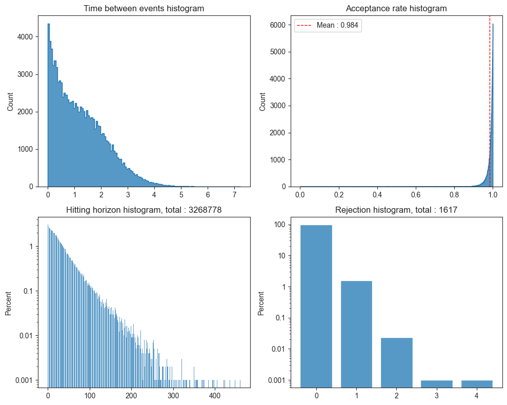
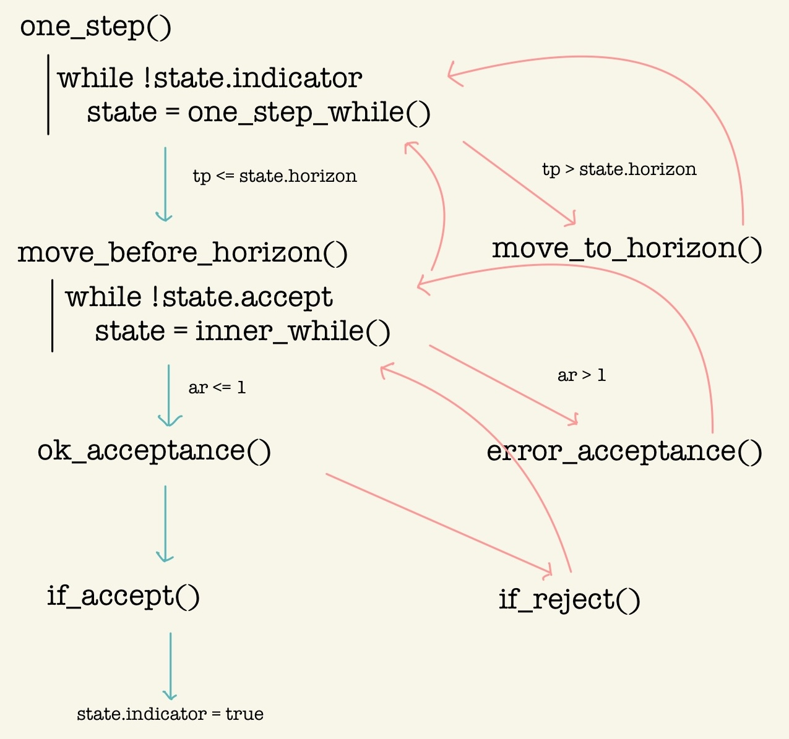
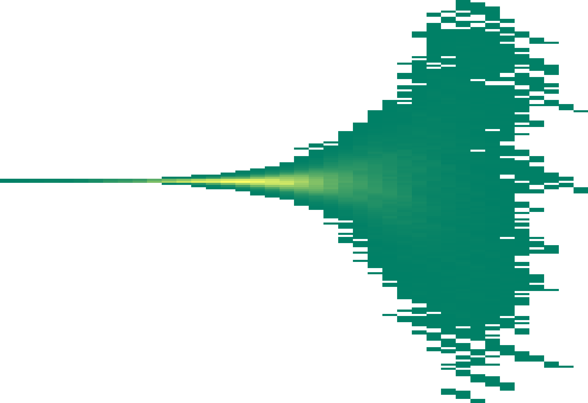
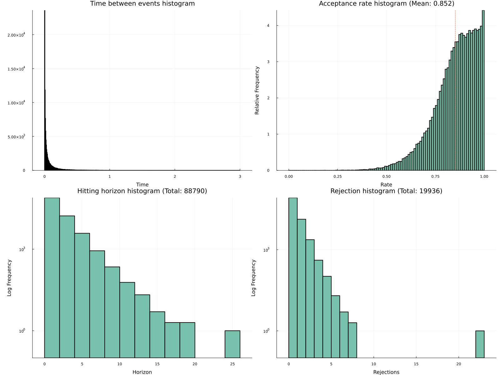

Zig-Zag サンプラーのサブサンプリングによるスケーラビリティ
大規模モデル・大規模データに対する MCMC を目指して
MCMC
Computation
Julia
Sampling
2024-07-18
連続時間 MCMC とは 2018 年に以降活発に研究が進んでいる新たな MCMC アルゴリズムである． 実用上の欠点に，種々のモデルに統一的な実装が難しくモデルごとにコードを書き直す必要があったことがあったが， この欠点は自動微分と (Corbella et al., 2022), (Sutton and Fearnhead, 2023) らの研究によって解決されつつある． ここでは (Andral and Kamatani, 2024) の Python パッケージ pdmp_jax とこれに基づく Julia パッケージ PDMPFlux.jl を紹介する．
連続時間 MCMC とは名前の通り MCMC のサンプリングを連続時間で行うアルゴリズムである：

方向転換をするオレンジ色の点を一定の法則に従って定めることで，軌跡全体が目標の分布に従う．
すなわち，目標の関数を緑色の軌跡上で線積分をすれば期待値が得られる．
詳しくは次の記事も参照：
A Blog Entry on Bayesian Computation by an Applied Mathematician
$$
$$
using PDMPFluxpdmp_jax パッケージ(Andral and Kamatani, 2024) のアルゴリズムは複数の特徴を持つ．
(Neal, 2003) が slice sampling のデモ用に定義した 漏斗分布 を考える： \[ p(y,x)=\phi(y;0,3)\prod_{i=1}^9\phi(x_i;0,e^{y/2}),\qquad y\in\mathbb{R},x\in\mathbb{R}^9. \]
import jax
from jax.scipy.stats import multivariate_normal
from jax.scipy.stats import norm
import jax.numpy as jnp
def funnel(d=10, sig=3, clip_y=11):
"""Funnel distribution for testing. Returns energy and sample functions."""
def unbatched(x):
y = x[0]
log_density_y = - y**2 / 6
variance_other = jnp.exp(y/2)
log_density_other = - jnp.sum(x[1:]**2) / (2 * variance_other)
return - log_density_y - log_density_other
def sample_data(n_samples):
# sample from Nd funnel distribution
y = (sig * jnp.array(np.random.randn(n_samples, 1))).clip(-clip_y, clip_y)
x = jnp.array(np.random.randn(n_samples, d - 1)) * jnp.exp(-y / 2)
return jnp.concatenate((y, x), axis=1)
return unbatched, sample_dataimport pdmp_jax as pdmp
dim = 10
U, _ = funnel(d=dim)
grad_U = jax.grad(U)
seed = 8
xinit = jnp.ones((dim,)) # initial position
vinit = jnp.ones((dim,)) # initial velocity
grid_size = 0
N_sk = 100000 # number of skeleton points
N = 100000 # number of samples
sampler = pdmp.ZigZag(dim, grad_U, grid_size)
# sample the skeleton of the process
out = sampler.sample_skeleton(N_sk, xinit, vinit, seed, verbose = True) # takes only 3 seconds on my M1 Mac
# sample from the skeleton
sample = sampler.sample_from_skeleton(N,out)import seaborn as sns
sns.jointplot(x = sample[:,0],y = sample[:,1])
plt.show()

number of error bound : 46817
graph TD;
A["one_step()"] -->|state.indicator=false| B["one_step_while()"]
B --> C{tp <= state.horizon}
C -->|No| D[move_to_horizon]
C -->|Yes| E[move_before_horizon]
E -->|state.accept=false| G[inner_while]
G --> I{ar <= 1.0}
I -->|No| J[error_acceptance]
I -->|Yes| K[ok_acceptance]
K -->|reject| L["if_reject()"]
L -->|場合によっては move_to_horizon2| N["inner_while() か one_step_while() まで戻る"]
K -->|accept| O["if_accept()
state.indicator=true
"]
D --> B
J -->|horizon を縮める| N
ar=lambda_t/state.lambda_bar によって Poisson thinning を行う．
ただし，lambda_bar とは近似的な上界であり，「最も近い直前の grid 上の点での値」でしかない．当然 lambda_t を超過し得る．そのような場合に error_acceptance() に入る．
error_acceptance() に入った場合，horizon を縮めてより慎重に同じ区間を Poisson thinning しなおす．
最後 if_reject() に入った場合，horizon に到達したら one_step_while() まで戻るが，そうでない場合は inner_while() まで戻る実装がなされている．

PDMPFlux.jl パッケージusing PDMPFlux
using Random, Distributions, Plots, LaTeXStrings, Zygote, LinearAlgebra
"""
Funnel distribution for testing. Returns energy and sample functions.
For reference, see Neal, R. M. (2003). Slice sampling. The Annals of Statistics, 31(3), 705–767.
"""
function funnel(d::Int=10, σ::Float64=3.0, clip_y::Int=11)
function neg_energy(x::Vector{Float64})
v = x[1]
log_density_v = logpdf(Normal(0.0, 3.0), v)
variance_other = exp(v)
other_dim = d - 1
cov_other = I * variance_other
mean_other = zeros(other_dim)
log_density_other = logpdf(MvNormal(mean_other, cov_other), x[2:end])
return - log_density_v - log_density_other
end
function sample_data(n_samples::Int)
# sample from Nd funnel distribution
y = clamp.(σ * randn(n_samples, 1), -clip_y, clip_y)
x = randn(n_samples, d - 1) .* exp.(-y / 2)
return hcat(y, x)
end
return neg_energy, sample_data
end
function plot_funnel(d::Int=10, n_samples::Int=10000)
_, sample_data = funnel(d)
data = sample_data(n_samples)
# 最初の2次元を抽出（yとx1）
y = data[:, 1]
x1 = data[:, 2]
# 散布図をプロット
scatter(y, x1, alpha=0.5, markersize=1, xlabel=L"y", ylabel=L"x_1",
title="Funnel Distribution (First Two Dimensions' Ground Truth)", grid=true, legend=false, color="#78C2AD")
# xlim と ylim を追加
xlims!(-8, 8) # x軸の範囲を -8 から 8 に設定
ylims!(-7, 7) # y軸の範囲を -7 から 7 に設定
end
plot_funnel()
function run_ZigZag_on_funnel(N_sk::Int=100_000, N::Int=100_000, d::Int=10, verbose::Bool=false)
U, _ = funnel(d)
grad_U(x::Vector{Float64}) = gradient(U, x)[1]
xinit = ones(d)
vinit = ones(d)
seed = 2024
grid_size = 0 # constant bounds
sampler = ZigZag(d, grad_U, grid_size=grid_size)
out = sample_skeleton(sampler, N_sk, xinit, vinit, seed=seed, verbose = verbose)
samples = sample_from_skeleton(sampler, N, out)
return out, samples
end
output, samples = run_ZigZag_on_funnel() # ４分かかる
jointplot(samples)

このデモコードは Zygote.jl による自動微分を用いると 5:29 かかっていたところが，ForwardDiff.jl による自動微分を用いると 0:21 に短縮された．
Zygote.jl と ForwardDiff.jl による自動微分Zygote.jl は FluxML が開発する Julia の自動微分パッケージである．
using Zygote
@time Zygote.gradient(x -> 3x^2 + 2x + 1, 5) 0.871861 seconds (3.45 M allocations: 168.332 MiB, 7.44% gc time, 99.98% compilation time)(32.0,)f(x::Vector{Float64}) = 3x[1]^2 + 2x[2] + 1
g(x) = Zygote.gradient(f,x)
g([1.0,2.0])([6.0, 2.0],)大変柔軟な実装を持っており，広い Julia 関数を微分できる．
ForwardDiff.jl (Revels et al., 2016) は Zygote.jl よりも高速な自動微分を特徴としている．
using ForwardDiff
@time ForwardDiff.derivative(x -> 3x^2 + 2x + 1, 5) 0.051793 seconds (260.59 k allocations: 12.726 MiB, 99.92% compilation time)32Optim.jl は Julia の最適化パッケージであり，デフォルトで Brent の最適化アルゴリズムを提供する．
using Optim
f(x) = (x-1)^2
result = optimize(f, 0.0, 1.0)
result.minimizer0.999999984947842StatsPlots.jl による可視化StatsPlots は現在 Plots.jl に統合されている．
また PDMPFlux.jl は marginalhist を wrap した jointplot を提供する．
ProgressBars.jl による進捗表示ProgressBars.jl は tqdm の Julia wrapper を提供する．
ProgressMeter.jl も同様の機能を提供し，ZigZagBoomerang.jl ではこちらを採用している．
今後の確率的プログラミングの１つの焦点は自動微分かもしれない．
今回のパッケージ開発で，少なくとも v0.2.0 の時点では，プログラムに与える U_grad は多くの場合（10 次元の多変量 Gauss，50 次元の Banana など） Zygote.jl が少し速く（Funnel 分布では ForwardDiff.jl が速い），しかし上界を構成する際の func の微分は ForwardDiff.jl の方が圧倒的に速い．
大変に不可思議である．
Zig-Zag 以外のサンプラーの実装
ZigZag(dim) は自動で知ってほしい
Try clause 内の else を用いているので Julia 1.8 以上が必要．
MCMCChains のような plot.jl を完成させる．
PDMPFlux.jl のドキュメントを整備する．
ZigZagBoomerang.jl を見習って統合したり API をつけたり？
Turing エコシステムと統合できたりしないか？
Rng を指定できるようにする？
pdmp-jax では 37 秒前後かかる Banana density の例が，PDMPFlux.jl では 2 分前後かかる．
ForwardDiff.jl を採用したところ，02:05 から 10 分以上に変化した．ReverseDiff.jl を採用したところ 4:44 になった．50 次元というのが微妙なところなのかもしれない．Funnel 分布で試したところ，PDMPFlux.jl の棄却率が極めて高い．
Seaborn.jl による可視化